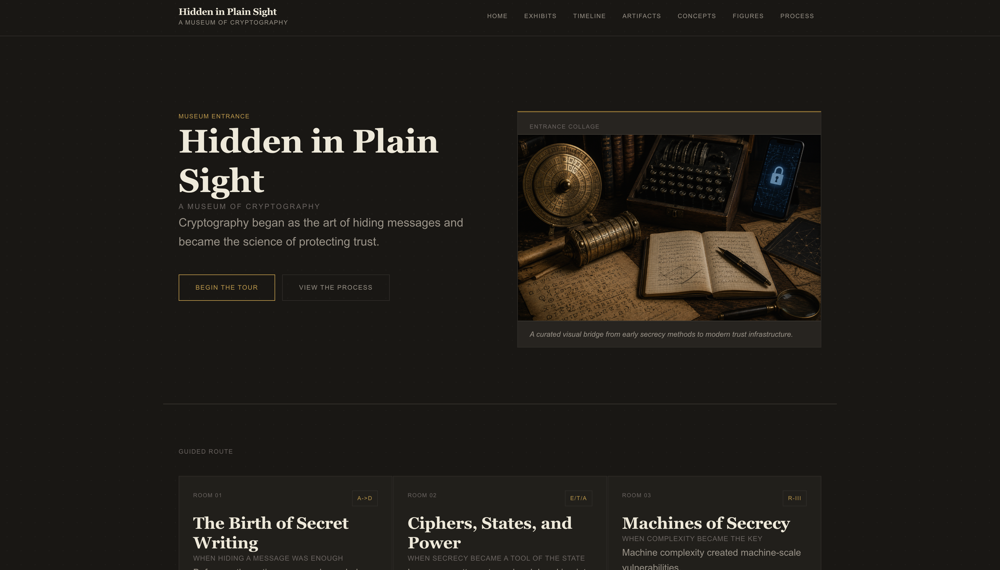
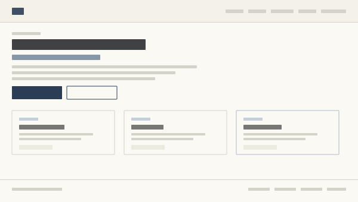
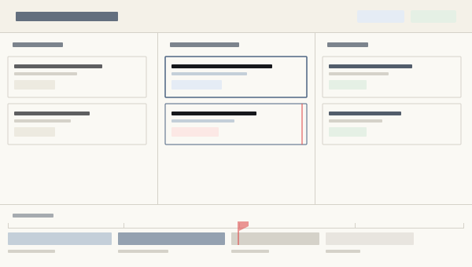

Work
Two completed web projects and one concept in development. Each one represents real decisions, real constraints, and real learning. The concept is clearly labeled.

A museum-style website covering the history and evolution of cryptographic methods. Built with HTML, CSS, and JavaScript. My first serious web project, developed in collaboration with ChatGPT and VS Code.

This site. My second serious web project, built to communicate my professional direction clearly and honestly. No frameworks, no dependencies — plain HTML, CSS, and JavaScript.

A concept for a lightweight team dashboard that surfaces project status, task owners, deadlines, and blockers in a single view. Designed around the problem of teams losing alignment when information is scattered.